Free to forkNo licence and no copyright claim: build this game under your own name, or lift one idea from it. Why?
Game overview
An office building has suffered a shitstorm. Literally. Muck is on the floors, on the walls, dripping from the ceilings and caked into the fans, and to make it worse there isn't a single plant in the place. No unprotected person can go in, so a janitor puts on a hermetically sealed powersuit and goes in with a vacuum, a mop, a power fist and a watering hose.
Each stage is a cutaway of a multi-floor office that fits on one screen and plays like a vertical platformer: jump up through the floors, drop down to the lower ones, and clean everything. The muck is falling sand, simulated pixel by pixel, and it comes in three states that each need a different tool. Then the clever bit: everything you collect goes into the office's empty flower pots, and a spray of water turns each one into a lush green plant. The mess becomes the garden the office never had.
It's tongue-in-cheek on purpose, and it never rushes you. It belongs to Reactorcore's series of small falling sand games, each a short, complete game built on a pixel simulation like The Powder Toy, so this page presents it at its honest size.
Target audience
People who love the quiet satisfaction of a mess becoming clean (PowerWash Simulator, Viscera Cleanup Detail), falling sand fans who wish their sandbox had a goal, and anyone who likes humor that's silly rather than mean.
They want a tidy finish without pressure, and most cleaning games are either long simulations or timed arcade rushes.
Platformer keys and a mouse with two buttons.
Game's purpose
Order and harmony: watching chaos turn back into a clean, working room, pixel by pixel.
Beauty and creation: every finished office is greener and nicer than before the storm.
Silliness: a ridiculous premise played completely straight.
It avoids draining rest and autonomy: no timer, no score to chase, and a campaign mood that leaves out the fighting entirely if you'd rather just clean.
Core concept
In most cleanup games the mess is just something to remove, and the reward is an empty room.
Here the mess is material: every pixel of muck you collect goes into a pot and comes back as a plant, so cleaning and decorating are the same act.
And the offices never run out: you work for a company whose clients have endless shitstorms, and each building is generated fresh.
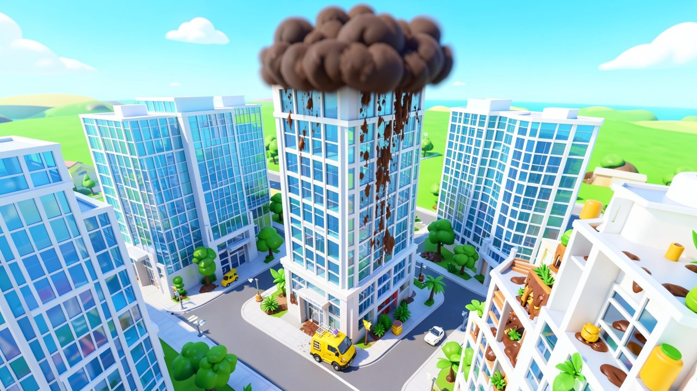
"After a poo storm, no unprotected person can enter the building. Only a janitor in a sealed powersuit goes in."
Lore and story
The storm
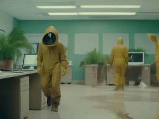
Somewhere in an office, someone caused a shitstorm, the metaphorical kind, and it got so bad it became the real kind. Muck in every state, from runny to crusty, covers the floors, walls and furniture. Somebody threw it in the fans. The water cooler tanks are knocked over. And the place has no greenery at all, which, frankly, is unbearable.
The company
You work for an office washing company that specializes in absolute shitstorms. Your clients are corporations with magnificently self-important names, and each of their buildings is a branch with an even grander one: think "Synergetic Paradigm Holdings, Thought Leadership Hub (Basement Annex)". There's never a shortage of work.
The monster
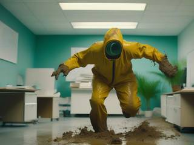
Some storms are so bad they take on a life of their own: a malevolent poo monster that runs around the office spraying muck and, above all, throwing it into the fans, so everyone knows that the shit has, in fact, hit the fan.
The job
Clean the building top to bottom, fix what's broken, make it bloom, and get the "Cleaned!" stamp on the work order. Then on to the next one.
Controls and interface
You move the janitor like a platformer hero and point the current tool with the mouse.
Move
A / D
Walk left and right
W
Jump, and jump again in mid-air
S
Drop down through a one-way platform
Work
Mouse 1
Use the current tool
Mouse 2
Next tool: power fist, vacuum, mop, hose
E
Interact: water tanks, coolers, fans, pots, the exit
The offices are white and light grey, so the brown muck and every object to fix stand out at a glance. A checklist shows what's done and what's left. Fans, coolers, pots and the muck itself don't block you: you walk in front of them, so the only things in your way are walls and floors.
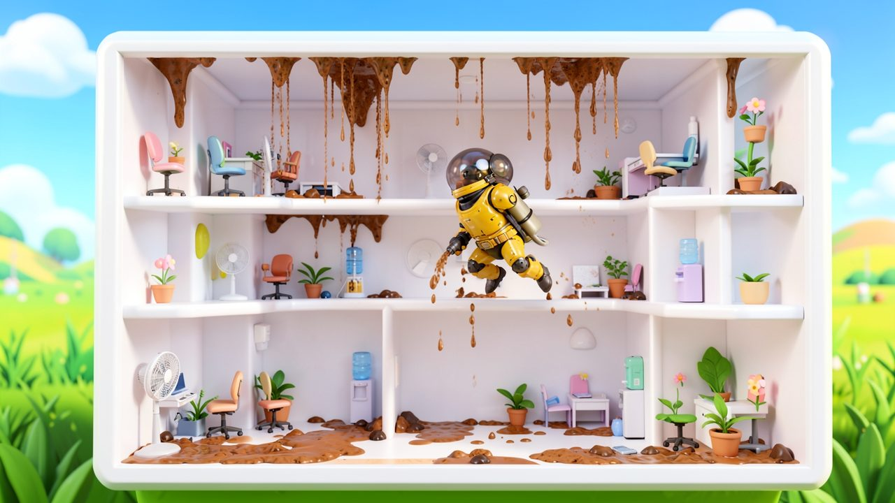
"Grainy muck gets vacuumed, runny muck gets mopped, and crusted muck has to be punched loose first."
Game layers
01 · Moment-to-moment
One office, top to bottom
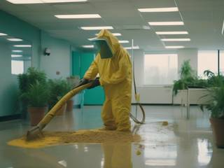
Climb, drop, vacuum, mop, punch. Put the fallen water tanks back on their coolers and refill them, wash the fans and switch them back on, fill every pot, water it, and watch it grow. When the checklist is all ticked, the exit opens.
On an action stage, there's a poo monster to deal with first, and its explosive end adds to the mess you then clean up.
02 · Low metagame
A campaign of nine buildings
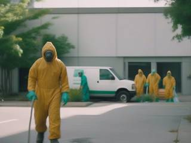
A campaign is nine buildings for one client company, each generated fresh: how dirty it is (barely to completely), the mix of grainy, runny and crusted muck, and how many fans, pots and coolers it has (anywhere from none to nine of each).
Before it starts, you pick the campaign's mood: relaxing, action or mixed.
03 · High metagame
The company and its log
You run the company's shitstorm division, and the clients keep calling. Every finished campaign goes into the company log: each client company with its nine branches listed under it, every one stamped "Cleaned!", with the job's invoice and how long it took.
The log is a record of the work, never a scoreboard: the invoice only shows how big each mess was, and there's nothing to spend it on.
04 · Practical game flow
One building at a time
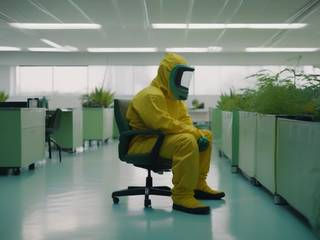
A building takes a few minutes, or as long as you like: the game is fast if you play it fast, but nothing makes you. After each one, a celebration picture appears with a random piece of wisdom about patience, the kind that helps you keep the shit from hitting the fan in real life.
That's the natural place to stop. The game saves between buildings, and the campaign waits where you left it.
Game modes
There's one game, the campaign of nine buildings, with three moods to choose from:
Mood
Every stage
For when you want
Relaxing
Just the mess, no monster
To unwind and clean in peace
Action
A poo monster first, then the mess
A punch-up before the tidy-up
Mixed
A monster, or not, at random
A bit of both, unannounced
Any building in the log can also be visited again exactly as it was, as a flashback (see Features).
Features and mechanics
Falling sand
Three states of muck, four tools
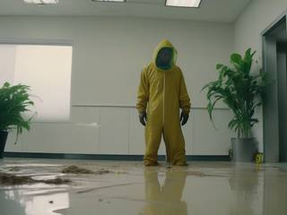
All the muck is simulated pixel by pixel. Grainy muck falls and piles up like sand, runny muck flows, pools and drips down through gaps to the floor below, and crusted muck sticks where it is. Walls and floors are solid; everything else in the office is a picture you pass in front of.
Tool
What it does
Vacuum
Sucks up grainy muck into the suit's tank
Mop
Soaks up runny muck
Power fist
A punch that blasts a circle of pixels at once, breaking crusted muck into grains
Hose
Refills coolers, washes fans, waters pots
So the order matters: punch the crust loose before you vacuum it, and clean upstairs before downstairs, because runny muck drips.
The heart of it
From muck to greenery
Everything you collect stays in the suit's tank. Walk up to a flower pot and press E, and the tank shares its contents out between the office's pots, the right amount for each, automatically. There's no fiddly measuring: collect it all, visit every pot.
Then spray each filled pot with water, and a verdant green plant grows out of it. The more thoroughly you cleaned, the more there is to put in the pots, and by the end the office that had no greenery at all is full of it. Does it make sense? No. Is it satisfying? Yes.
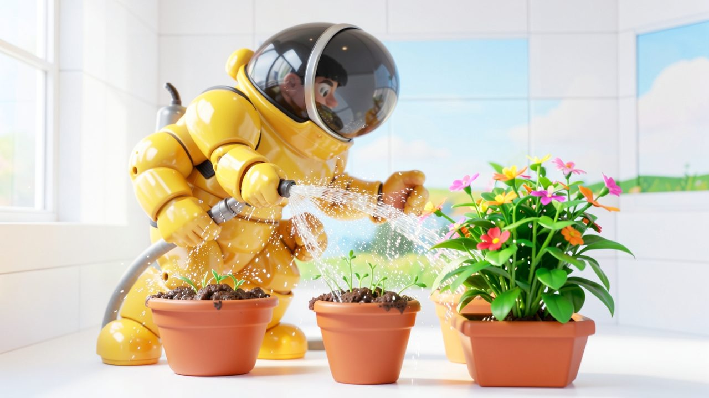
"Every pot filled with muck and watered grows into a green plant."
Put it all back
Fix the office, then tick the list
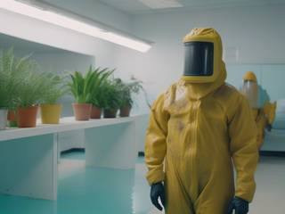
The storm knocks things over and fouls them up. Fallen water tanks get picked up with E, put back on their coolers and refilled with the hose. The fans get washed and switched back on.
The checklist keeps track of every pixel of muck, every tank, fan and pot, so you always know what's left, and when it's all done, the exit opens.
Action stages
The poo monster
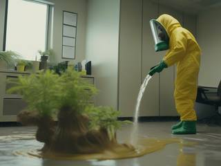
On an action stage, a poo monster roams the office with 100 to 200 hit points, spraying all three kinds of muck as it goes. It isn't interested in you: it wants to make a mess. It only turns on you if you've hit it in the last five seconds or come within a couple of metres.
Fight it close with the power fist, 25 damage a punch, four to eight punches in all, or from a distance with the hose, 1 damage a shot, about half a minute to a minute of steady spraying. Or mix the two. The janitor has 20 hit points; the monster punches for 3 and throws muck for 1, and every attack has a two-second wind-up, so you can always see it coming and get out of the way. At zero, it bursts gloriously into a huge splash of grainy and runny muck, and the cleaning begins.
If the janitor's suit runs out of hit points, the suit pulls them back out to the van for a patch-up and they head straight back in. Nothing is undone: the monster keeps its damage, and the mess stays exactly where it was.
Never the same office twice
Generated buildings
Every building is rolled from a few dials: how dirty it is, what share of the muck is grainy, runny or crusted, how many fans, pots and coolers it has, and, in mixed campaigns, whether a monster lives there. A nearly clean floor with nine pots to fill plays nothing like a building drowned in crust with a single cooler.
Every campaign is made from a seed, so any of its buildings can be rebuilt exactly as it was.
A record of the work
The company log and flashbacks
The log lists every client and every branch you've cleaned, each with its generated corporate name, the kind that sounds like a motivational post, its "Cleaned!" stamp, and an invoice: 10 dollars for every pixel of muck and 100 for every object fixed. The money is only a measure of how dirty the place was, and how much you did about it.
Pick any building in the log to visit it again as a flashback, exactly as it was, under a subtle sepia filter. Clean it faster, and the log's record time for that job and its company improves. The original visit stays the one that counts in the story.